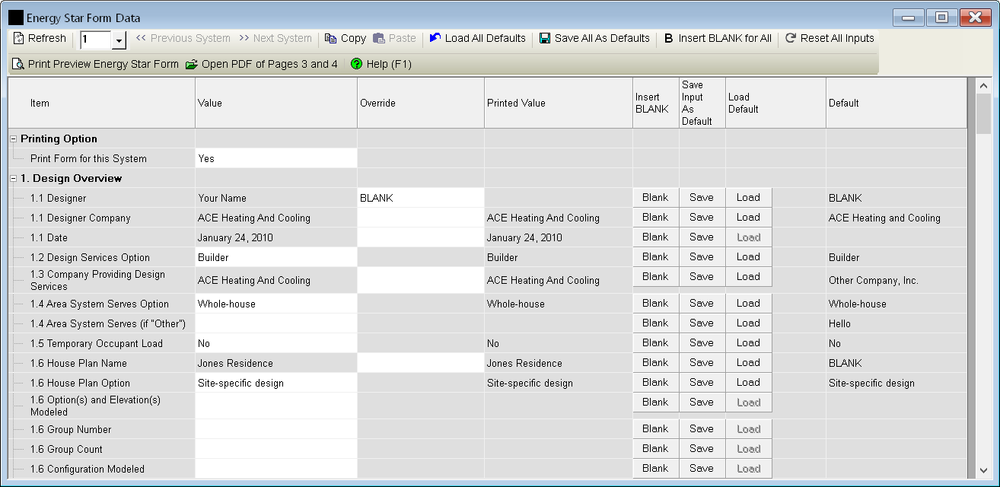

Energy Star Form Data (Project Menu) |
  
|
Energy Star Form Data (Project Menu) |
|
Icon: . Keyboard Shortcut: ALT, P, F
Opens the Energy Star Form Data window, pictured below, which lets you fill in inputs that will be used to fill in the blanks on the printed Energy Star form when you select it on the Select Reports dialog. The Energy Star form is entitled, "HVAC Design Report, ENERGY STAR Certified Homes, Version 3 / 3.1 (Rev. 08)" Your local authorities may require that you turn in this form.

Refresh: Saves data on any other open project windows, recalculates the project, and fills in the results for some items in the Value column of the list.
System Number: Specifies the system number associated with the values shown on this window.
Previous System, Next System: Changes the system number to the previous or next system. Only available if there are multiple systems in the current project.
Copy: Copies the current set of inputs to the clipboard, so you can paste them into another system on this window.
Paste: Pastes the inputs on this window that you copied to the clipboard earlier with the Copy button.
Load All Defaults: Copies all of the values in the Default column to the Value or Override column, whichever applies. The same as clicking each of the Load buttons in the grid.
Save All As Defaults: Copies all of the values entered in the Value and Override columns to the Default column, so you can use them for other projects later. The same as clicking all of the Save buttons in the grid.
Insert BLANK for All: Inserts the word, "BLANK" into each input on the window.
Reset All Inputs: Removes all text for the inputs that allow you to type freely. For the inputs that only allow choices from the dropdown help (such as 1.2, "Design Services Option"), sets the text to the first choice in the list.
Print Form For this System: Opens the Print Preview window with the filled in Energy Star form. If the Print Preview window was not already open this report will be the only report included in the preview. You may also print the form by clicking the appropriate boxes on the Select Reports dialog.
Note: By default, the ACCA form is generated using a scale factor that adjusts everything so that the text at the bottom of the form is a little farther from the bottom edge of the paper than the original document produced by ACCA, in order to accommodate printers with a smaller printable area that does not extend as far down the page. The default for the scale factor is 1.0. If you would like to change the scale factor to stretch things farther, one way or another, you can enter the following in the "[Miscellaneous]" section of your Rhvac9.ini file:
EnergyStarReportYScale=0.95
The above example uses 0.95, but you can use 0.97, 1.00, or whatever you want. The default is 0.98.
Value and Override Columns: These columns show both project results and inputs that you can enter for the form. On items for which there is not a definitive result from elsewhere in the project, the Value column is editable. On items for which there is a definitive result, that result is shown in the Value column in a grayed out cell, and the Override column is editable. For any item that you want to not be filled in, enter the word, "BLANK" (without the quotes) into the appropriate cell, or select "BLANK" from that item's dropdown help window.
Printed Value Column. Shows the value that will actually be printed on the form for the indicated item.
Save: Saves the value entered in the Value or Override column as a default that can be used in other projects later. The default values are saved in the current user's preferences.
Load: Loads the value shown in the Default column to either the Value or Override column.